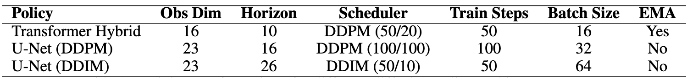
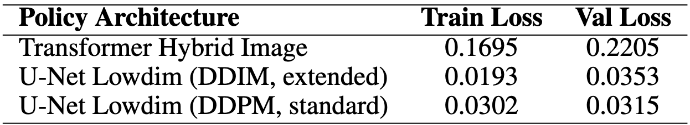
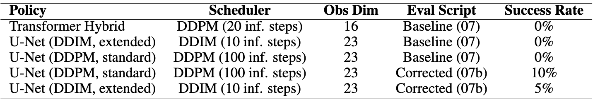
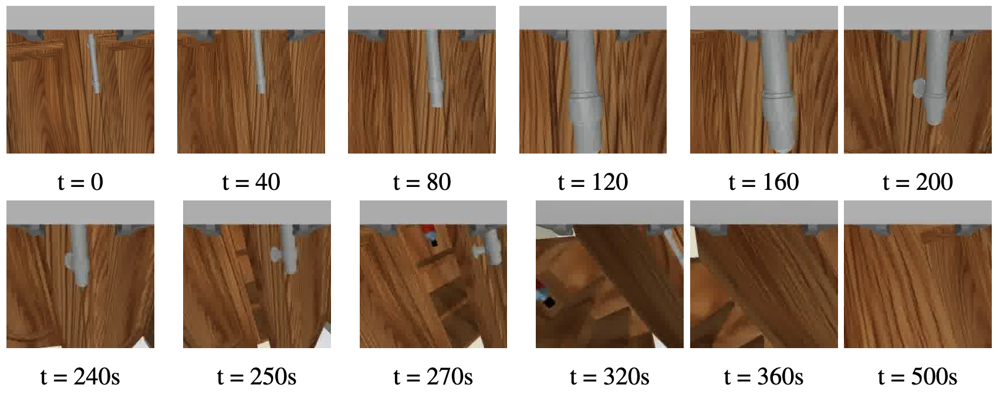

The short clip shows a successful run of the PandaOmron OpenCabinet task in RoboCasa from its first-person camera.
Moravec's Paradox observes that trivial tasks, like opening a cabinet door, are challenging for robots because they require high-dimensional perception and precise motor control. We study this in the RoboCasa OpenCabinet benchmark, where a PandaOmron manipulator must locate and open hinged cabinet doors in simulation. Standard behavior cloning fails due to distributional shift and its inability to model multimodal actions, whereas diffusion policies overcome these issues by iteratively denoising action trajectories conditioned on the robot's current state.
We train and compare a Transformer-based and two 1D convolutional U-Net-based diffusion policy variants. We further augment the proprioceptive state representation with three task-specific features derived directly from MuJoCo simulation state (handle position, handle-to-end-effector displacement, and door openness) expanding the 16-dimensional base observation to 23 dimensions. We also identify and correct two key failure modes in the evaluation pipeline: zero-filling of missing observation keys and action index mismatches between training and environment. Our results show that DDPM-scheduled U-Net policy achieves a 10\% success rate on the pretrain split.
We study the OpenCabinet task in RoboCasa, which provides 2,500+ generated kitchen environments varying in layout, cabinet style, handle geometry, and lighting conditions. The robot platform is the PandaOmron mobile manipulator, which integrates a 7-DOF Franka Panda arm with an omnidirectional Omron mobile base. In the OpenCabinet task, the robot is initialized near a closed HingeCabinet and must open the door to at least 90% of its maximum angular range within a 500-timestep horizon at 20 Hz, without access to visual observations during training or evaluation.
Standard behavior cloning learns a supervised mapping from demonstration states to actions using MSE regression. However, it is highly susceptible to distributional shift: because BC sees only expert trajectories during training, any small deviation during testing puts the robot in an out-of-distribution state and causes errors to compound quickly. Furthermore, expert demonstrations are multimodal: a human demonstrator may validly approach a cabinet handle from the left or the right, and MSE regression averages over these modes, producing a predicted action that satisfies neither and points the end-effector directly into the cabinet face. Diffusion policies address these issues by formulating action generation as the reverse of a stochastic denoising process over action sequences, representing multimodal distributions and producing temporally consistent action chunks.
This project follows the starter pipeline provided in the CS 188 course repository, from environment setup and dataset analysis to policy training and evaluation. Starting from the MLP behavior-cloning baseline provided in the repository, we pursue the diffusion policy direction suggested as a research extension. Our goals are: (1) to train and evaluate diffusion policy architectures from the official Diffusion Policy repository on a pre-collected OpenCabinet demonstration dataset; (2) to investigate whether augmenting the robot's proprioceptive state with explicit task-relevant features improves policy performance; (3) to examine sources of failure in the evaluation pipeline and develop principled corrections; and (4) to characterize the trade-offs between model capacity, training efficiency, and task success rate under realistic compute constraints.
We source training data from the RoboCasa OpenCabinet human demonstration dataset in LeRobot format, consisting of 35,853 transitions collected across a variety of kitchen layouts, cabinet styles, and handle geometries. Demonstrations are provided by trained human operators via teleoperation on the PandaOmron platform.
The base training dataset provides five proprioceptive state fields, creating a 16-dimensional observation vector:
To help the policy localize the cabinet handle and track task progress, we augment the dataset with three additional fields computed directly from MuJoCo simulation state, expanding the observation vector to 23 dimensions:
These features are not reliably present in the environment observation at evaluation time and are recomputed from simulation state using the same MuJoCo body/joint queries applied during dataset augmentation. The 12-dimensional action vector encodes base motion commands (x, y, yaw, torso lift), binary control mode toggle, end-effector target position, end-effector target orientation, and gripper close command.
We adopt the Diffusion Policy framework (Chi et al., 2023), which formulates action generation as a conditional denoising diffusion process over fixed-length action sequences. At each decision step, the policy conditions on a short window of recent observations and iteratively denoises a randomly initialized action trajectory, producing a coherent action chunk for open-loop execution before the policy is re-queried. We experiment with two architectural variants from the official Diffusion Policy repository.
The DiffusionTransformerHybridImagePolicy uses a causal Transformer backbone with 4 layers, 2 attention heads, and embedding dimension 128, with observations injected as conditioning tokens prepended to the noisy action sequence. Dropout is applied to both token embeddings (p=0.1) and attention weights (p=0.2) for regularization. The model operates over a planning horizon of 10, uses a DDPM noise scheduler configured for 50 training timesteps and 20 inference steps, and is conditioned on the 16-dimensional base proprioceptive vector (without task-specific augmentation). The Transformer's self-attention mechanism makes it well-suited to capturing long-range temporal dependencies within the action chunk, but also increases its sample complexity relative to convolutional architectures.
The DiffusionUnetLowdimPolicy uses a 1D convolutional U-Net as its denoising network, with channel dimensions [128, 256, 512], kernel size 5, 8-group group normalization, and a sinusoidal diffusion step embedding of dimension 128. Rather than injecting observations through attention, the entire observation window is concatenated into a single global conditioning vector of dimension 46 (23-dimensional augmented observation x 2 observation steps) and broadcast to all U-Net layers via FiLM conditioning. The model operates over a planning horizon of 16 with 2 observation steps and predicts 8-step action chunks.
We trained two variants of this architecture. The standard variant uses a DDPM scheduler with 100 training and inference timesteps. The extended variant uses wider channel dimensions [256, 512, 512], a longer planning horizon of 26, and a DDIM scheduler with 50 training timesteps and 10 inference steps, trading slightly higher model capacity for faster inference. Both use the 23-dimensional augmented observation vector.
All models were trained for 50 epochs on an Apple M2 with 16GB unified memory using the MPS backend. A cosine learning rate schedule with warmup was applied across all configurations, and exponential moving average (EMA) weight averaging was used for the Transformer policy, following the original Diffusion Policy implementation.

Table 1: Training configurations for different diffusion policy architectures.
The LeRobot dataset loader concatenates state fields in the fixed order defined by shape_meta to produce normalized observation tensors of shape (B, T, 23) and action tensors of shape (B, T, 12), where T is the planning horizon. Episode boundaries are handled with pad_before=1 and pad_after=7. A linear normalizer fitted over the training split is applied to both observations and actions prior to computing the diffusion loss, and its inverse is applied to policy outputs at inference time. At a batch size of 32, this yields approximately 560 gradient steps per epoch for the standard U-Net configuration.
At evaluation time, the environment is reset and an observation vector is constructed by mapping environment dictionary keys to their training-time counterparts via a fixed key remapping (e.g., robot0_base_pos → base_pos). The three task-specific augmentation features are recomputed from MuJoCo simulation state at every step using body positions and hinge joint angles, bypassing the observation dictionary entirely. A rolling buffer of the 2 most recent observation vectors is stacked into a (2, 23) tensor and passed to the policy to predict an 8-step action chunk.
Because the RoboCasa environment expects a different action index layout from the training format, a fixed index remapping is applied at execution time: arm commands (training indices 5–10) → environment indices 0–5; gripper (index 11) → index 6; base x/y/yaw (indices 0–2) → indices 7–9; torso lift (index 3) → index 10; control mode (index 4) → index 11. An episode is marked successful if any door hinge joint exceeds 90% of its maximum angular range. Evaluation terminates upon success, environment termination, or after 500 steps.
We developed two successive evaluation scripts, each targeting distinct failure modes identified in earlier iterations.
All three policy configurations converged over 50 epochs of training. Training curves are shown below for each architecture.

Table 2: Training and validation losses for each policy architecture over 50 epochs.
The U-Net variants achieve lower training and validation loss than the Transformer, due to the difference in observation representation: the U-Net policies receive the richer 23-dimensional augmented state while the Transformer uses only the 16-dimensional base proprioceptive vector. The DDIM extended variant achieves the lowest overall loss (train 0.0193, val 0.0353), suggesting that its larger model capacity ([256, 512, 512] channels) and faster DDIM schedule improve convergence speed on this task. Notably, the DDPM standard variant shows the smallest train–val gap (0.0302 vs. 0.0315), indicating better generalization despite the higher loss magnitude. The Transformer’s larger val-train gap (0.17 vs. 0.22) and slower convergence suggest that it is underfitting given the small batch size (16) and shorter observation history available without augmentation.
We evaluate each policy over 20 rollouts on the pretrain kitchen split using the corrected evaluation script.

Table 3: Success rates for each policy architecture under different evaluation scripts.
Under the baseline evaluation script, all policies achieve 0% success, a result that initially appeared to indicate policy failure but was subsequently traced to a systematic bug in the evaluation pipeline: the silent zero-filling of missing observation keys caused the policy to receive corrupted inputs in which the handle position and displacement features were always zero, providing no task-relevant signal despite being present in training. Upon switching to the corrected script that recomputes these features from simulation state, the standard DDPM U-Net achieves 10% success rate (2/20 episodes). Qualitative inspection of successful episodes shows the robot correctly approaching the handle from below and executing a clean pulling motion; failed episodes predominantly show the robot making contact with the cabinet face rather than the handle, suggesting that handle localization remains a bottleneck.
Figure 1: Training and validation loss curves over 50 epochs for each policy architecture.
The DDIM extended variant achieves 5% with the corrected script. Despite its lower training loss, this model’s reduced inference steps (10 vs. 100) may produce slightly noisier action trajectories at deployment, and its wider capacity may overfit on the relatively small demonstration set. The Transformer policy achieves 0% throughout, which we attribute primarily to the absence of task-specific augmentation in its observation representation: without handle position and displacement features, the policy must infer cabinet geometry implicitly from base and end-effector pose, a considerably harder signal.

Figure 2: Sequence of frames from the PandaOmron robot’s first-person camera performing the OpenCabinet task after training with the standard DDPM U-Net policy. The frames show the robot approaching the handle, executing a pulling motion, and opening the door, illustrating task progression over time.
The contrast between 0% (baseline script) and 10% (corrected script) on the same model checkpoint isolates the contribution of the evaluation pipeline fix. This 10-point gap demonstrates that silent observation corruption can completely mask the capabilities of a trained policy, and that recomputing task-specific features from simulation state is essential for faithful evaluation of policies that depend on handle localization features. This finding motivates careful validation of observation key mappings as a standard step in the evaluation workflow.
Although both architectures implement the same diffusion policy framework, their practical training and deployment characteristics differ greatly.
Training speed and cost. The U-Net policy is considerably slower to train than the Transformer. Its 1D convolutional encoder–decoder architecture requires multiple sequential downsampling and upsampling passes over the full planning horizon at each training step, and the FiLM conditioning layers introduce additional parameter overhead at every resolution level. In contrast, the Transformer processes the action sequence in a single forward pass through its attention layers, and its smaller batch size (16 vs.\ 32–64) reduces the number of operations per step. On the M2 MPS backend, U-Net epochs required approximately 2--3$\times$ longer wall-clock time than Transformer epochs. While this gap would likely narrow on GPU hardware with optimized convolution kernels, it remains significant under our compute constraints.
Training Loss.The Transformer’s final training loss (0.1695) is approximately 5--8$\times$ higher than that of the U-Net variants (0.0193--0.0302), which might initially suggest inferior performance. However, the architectures operate on different observation representations: the Transformer uses only the 16-dimensional proprioceptive state, while the U-Net conditions on the 23-dimensional augmented state including task-relevant features. Predicting a 12-dimensional action from richer observations constitutes an easier regression problem, making direct loss comparisons misleading. The Transformer’s higher loss thus reflects a more challenging conditioning signal rather than strictly weaker modeling capacity.
Conditioning mechanism. The Transformer incorporates observations via token-level conditioning, projecting observation vectors into the embedding space and prepending them as prefix tokens. This enables flexible attention across time but is relatively data-intensive, as the model must learn to selectively weight observation features across the action horizon. In contrast, the U-Net applies global FiLM conditioning, concatenating the observation window into a single vector that modulates convolutional activations through scale-and-shift operations at each layer. This introduces a stronger inductive bias, allowing faster convergence in limited-data regimes. However, FiLM conditioning lacks the ability to model fine-grained temporal dependencies that attention-based mechanisms can capture.
Parameter efficiency and generalization. Despite having fewer parameters than the wider U-Net variants, the Transformer exhibits a larger train–validation gap (0.050 vs.\ 0.013 for the standard U-Net), suggesting underfitting on the 35,853-transition dataset. This aligns with the Transformer’s reliance on larger datasets to effectively learn attention structure. The U-Net’s convolutional inductive bias provides stronger regularization, contributing to improved generalization and more stable deployment performance in this setting.
At first glance, the DDIM extended variant’s lower training loss might suggest it should outperform the DDPM standard policy at deployment. We hypothesize the opposite outcome arises for two reasons. First, DDIM’s deterministic sampling with only 10 inference steps produces less diverse action trajectories than DDPM’s stochastic 100-step process, which is a disadvantage on a task where action multimodality matters and slight variation in approach trajectories may be needed to recover from imprecise initial positioning. Second, the extended model’s larger planning horizon (26 vs. 16) may produce actions that are locally smooth but globally misaligned with the 500-step episode constraint, drifting further from the handle before correction.
A second contributing factor is the extended model’s longer planning horizon of 26 steps versus 16 for the standard U-Net. A longer horizon requires the policy to accurately predict further into the future from a fixed observation window, which is harder under our limited training data. Predicted action chunks may be locally smooth but globally misaligned—the robot follows a plausible-looking trajectory that nevertheless fails to arrive at the handle by the time the chunk ends and re-planning occurs. The standard U-Net’s shorter 16-step horizon keeps predictions closer to the regime well-covered by the training demonstrations, reducing this drift. Together, these factors suggest that for constrained training budgets and moderate-difficulty tasks, the slower but more thorough DDPM sampling process is preferable to the faster DDIM approximation.
The inclusion of handle position, handle-to-end-effector displacement, and door openness as explicit observation features represents a deliberate inductive bias toward the spatial structure of the OpenCabinet task. Rather than requiring the policy to infer handle geometry implicitly from base and end-effector pose alone—a challenging inverse-geometry problem across thousands of cabinet configurations—these features directly encode the most task-relevant spatial relationship at every timestep. Handle position and displacement together give the policy a coordinate-frame–agnostic signal for approach direction that generalizes across kitchen layouts; door openness provides a dense progress signal that vanilla proprioception cannot capture.
The 10\% success rate achieved by the augmented U-Net versus 0\% for the non-augmented Transformer is unfortunately confounded by the architectural differences described in Section 5.1, making it impossible to attribute the improvement to augmentation alone. However, several qualitative observations support the hypothesis that these features are necessary, not merely helpful. In successful rollouts, the robot’s end-effector approaches the handle smoothly from below and makes contact on the first attempt, consistent with a policy that has a reliable spatial target. In failed rollouts, the robot either stops short of the handle by a consistent offset or makes contact with the cabinet panel face, suggesting the localization signal is present but noisy rather than absent entirely. A proper controlled ablation—training the U-Net with and without augmentation under identical conditions—would cleanly isolate this contribution and is a natural next experiment.
Several practical challenges shaped our experimental design and results:
Observation key mismatches. A structural discrepancy between the forked repository’s observation key conventions and those expected by the evaluation environment caused immediate failures during rollout. This mismatch propagated into the data normalization stage, as the pre-trained normalizer indexed features by key name; any missing or extraneous keys resulted in misaligned inputs. To address this, we implemented a strict filtering protocol and recomputed task-specific features directly from MuJoCo simulation state, ensuring that the evaluation distribution remains consistent with the training distribution.
Action index remapping. The training dataset stores actions in a different index layout from that expected by the RoboCasa environment. The required remapping (described in Section 3.4) was identified by comparing successful demonstration replays with policy rollout outputs. This step is critical for correct deployment; without it, arm commands may be incorrectly routed to base actuators and vice versa, leading to systematic failure.
Compute constraints. Training was conducted on an Apple M2 using the MPS backend, which required smaller batch sizes than the A100-based configurations commonly used in prior Diffusion Policy work. This limits the effective gradient signal per update. Our models were trained for 50 epochs with approximately 560 steps per epoch (17,920 total updates for the standard U-Net), which is below the 200--500 epoch range typical in the literature. Training loss had not fully plateaued by the end of training, suggesting that extended training would likely yield improved performance and higher success rates.
Several directions could improve upon these results. Longer training with a cosine-annealed learning rate through 200+ epochs is the most straightforward lever, given that training loss was still decreasing at epoch 50. Visual observation integration via the Transformer hybrid policy’s image encoder could provide richer spatial grounding than proprioception alone. Receding-horizon execution with online re-planning at every 4–8 steps rather than executing full 8-step chunks open-loop may reduce error accumulation over long episodes. Finally, data augmentation via state perturbation or trajectory stitching could mitigate distributional shift without requiring additional human demonstrations.
All members contributed to the discussion of model architecture and training methods. Different approaches including basic behavior cloning and DAgger were considered before finalizing on the diffusion policy iteration.
Joyce Chen implemented the training policy based on the official Diffusion Policy repository and compiled the methods section of the report.
Susie Kim compiled the project website and contributed to the introduction and results discussion of the report.
All members contributed equally to this project.